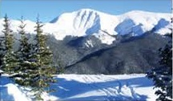
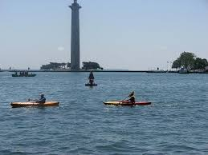

Skiing
I started skiing not long after I learned to walk, with my first time down the bunny slope was when I was 2 years old. I was hooked ever since!
I have been fortunate enough to ski some great areas in the Rocky Mountains, such as Winter Park CO, and Alta UT. This time of year would usually involve trips to Boston Mills, however the weather has not cooperated!

Kayaking
When it's too warm to ski, I enjoy going out on lake erie and kayaking the shores. I bought my first Kayak in high school and thoroughly enjoy
paddling the coastlines of nearby bays. When visiting family in Florida, renting a kayak for a day to paddle the estuaries and mangroves is a go to activity!
